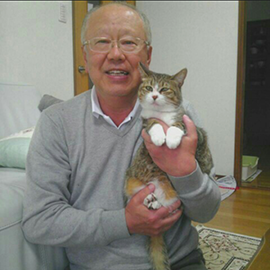

患者者様の声

福岡市在住
山本忠男さん＆愛猫のミャー助ちゃん
今回、福岡動物病院の院長先生はじめ、看護師の皆様には本当にお世話になりました。
もともと元気が取り柄のミャー助でしたので、大好きなキャットタワーからの着陸失敗による骨折には非常に驚き、私の方があたふたとしておりました。痛そうにしているミャー助を見ていると本当に申し訳ない気持ちでいっぱいになってしまってて・・・。
そんな時に駆け込んだのが福岡動物病院でした。痛がるミャー助でしたが、先生に診ていただき、ギブスをはめ、１ヶ月ほどで完治しました。
今では大好きなアジのお刺身をたくさん食べて家の中を走り回っています。元気過ぎて猫の運動会状態ですよ。私も毎日猫じゃらしをもって運動会に参加しております。いい運動になりますね。
これからもミャー助と一緒に人生を楽しんでいきたいと思っております。
本当に皆様に感謝しております。ありがとうございました。